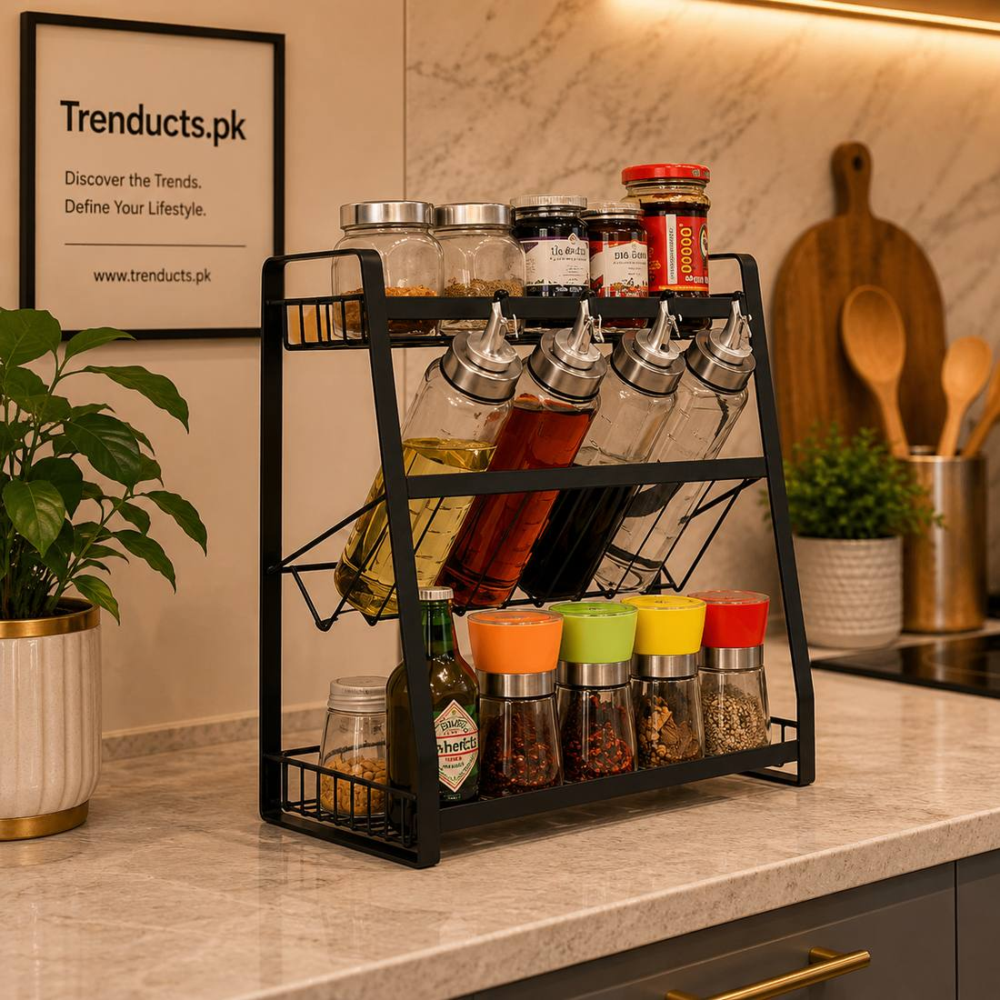
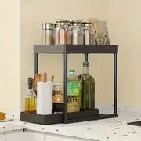
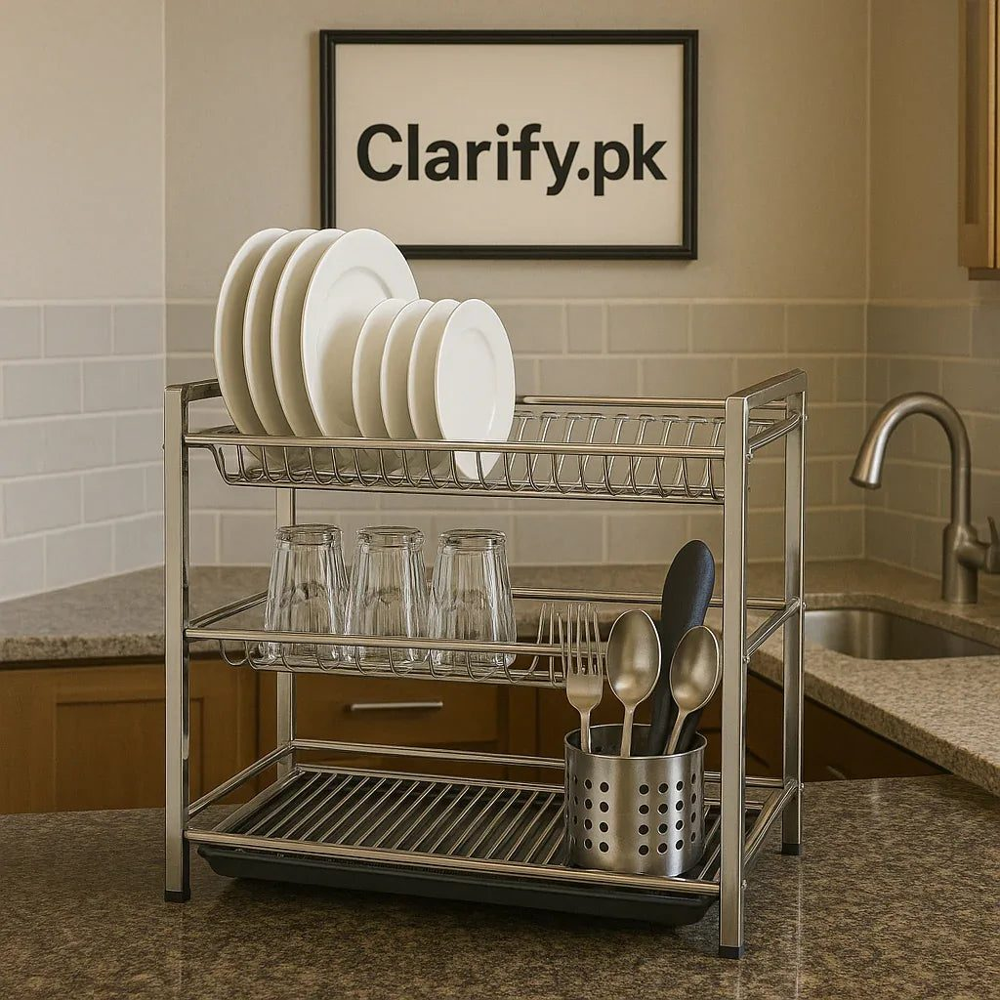

The space under and around the kitchen sink is often the messiest corner of the house. Here is how to organise it with racks, dish stands and smart habits.

Open the cabinet under the kitchen sink in most Pakistani homes and you will find a familiar scene: half-empty bottles of dishwashing liquid, old sponges, a bucket, plastic bags stuffed into other plastic bags, a leaking pipe trap, and perhaps a few cockroaches. Around the sink, dishes pile up in an overfilled drying basket. It is the hardest-working corner of the kitchen, and it usually gets the least attention.
With a few racks and better habits, this area can become clean, dry and efficient. This guide walks through it step by step.
Take everything out of the under-sink cabinet. Throw away dried-up bottles, broken brushes and old sponges. Wipe the base with a disinfectant. Then check the plumbing: is the trap leaking, is the cabinet base swollen from water damage, is there a musty smell? Fix any leak before organising, because moisture will ruin everything you put back. A plumber can usually replace a trap or washer quickly and cheaply.
Place a waterproof mat or a cut piece of plastic sheet on the cabinet base. It protects the wood from drips and makes cleaning much easier; you simply take it out and wipe it. Some families add a sheet of newspaper on top, changed weekly, which absorbs small drips and shows quickly if there is a new leak.
The pipes under a sink make it an awkward space. Adjustable under-sink organisers are designed for this, with shelves that fit around the drain. Two-tier racks double the usable space for cleaning supplies. Angled racks hold bottles at a tilt, so labels are visible and nothing hides at the back. Pull-out baskets let you reach items without kneeling and digging. You can compare several such designs among these sink and kitchen organisers before choosing one for your cabinet.

Keep only items related to cleaning and the sink itself:
Do not store food, flour or rice here; moisture and pests make it unsafe. Keep harsh chemicals like drain cleaner out of children's reach, ideally with a child lock on the cabinet.
A cramped drying basket leads to dishes stacked wet, which smell and attract insects. A proper dish and plate rack with separate slots for plates, cups and cutlery lets everything dry quickly. Stainless steel racks resist rust in humid kitchens. Place a drip tray underneath that drains into the sink. If counter space is tight, an over-the-sink rack lets dishes drip directly into the basin.
Wet sponges left in the sink become breeding grounds for bacteria. Use a small caddy or holder that lets them drain and dry. Rinse sponges well after each use and replace them every two to three weeks. Once a week, soak them in hot water with a little bleach or microwave a damp sponge for one minute to kill germs.

The sink area attracts cockroaches because of water and food scraps. Never leave dirty dishes overnight. Clean the drain with hot water and baking soda weekly. Seal gaps around pipes where they enter the wall with silicone or putty. Keep the under-sink cabinet dry, because pests need water more than food.
Before bed, wash or soak the remaining dishes, wipe the sink and counter, empty the sink strainer, and hang the dishcloth to dry. This short habit keeps the whole area fresh and stops problems from building up.
The sink corner works hard every day, and a little organisation makes it much easier to live with. Fix leaks, line the cabinet, use racks designed for awkward spaces, keep only cleaning items underneath and let dishes and sponges dry properly. A clean, dry sink area makes the entire kitchen feel healthier.